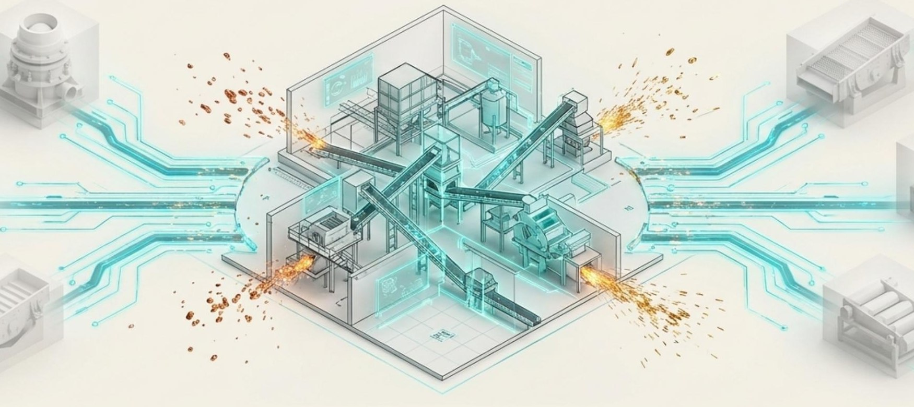

Мы не начинаем с оборудования.
Не так: «У нас есть дробилка, магнитный сепаратор и пресс — построим из них комплекс».
А так: «У вас есть материал. Сначала разберёмся, что с ним можно сделать».
Только после этого — оборудование, интеграция, комплекс.

Нужны ответы на четыре вопроса:
Точных цифр на этом шаге не требуется — порядок величины достаточен.
По присланным данным и имеющимся анализам смотрим, есть ли смысл идти дальше. Если материал явно не подходит, мы скажем об этом сразу.
Если для решения не хватает данных, есть три способа их получить: прислать имеющиеся анализы предприятия; провести испытания своей лабораторией по программе, которую мы составим под ваш материал; прислать пробу материала — испытания проведёт независимая лаборатория по той же программе.
Своей лаборатории у нас нет. При первых двух способах материал остаётся у вас.
По результатам испытаний оцениваем, оправдана ли переработка экономически. Если нет — говорим об этом прямо и на этом останавливаемся. Мы не обещаем заранее, что переработка окажется рентабельной: это и есть предмет оценки, а не исходное условие.
Если экономика подтверждена, разрабатываем техническое решение: маршрут переработки, состав оборудования, компоновку комплекса. Оборудование подбираем под ваш материал, а не наоборот — мы не привязаны к конкретным производителям.
Координируем поставки оборудования и работы на площадке. Своей проектной организации у нас нет: разделы документации, которые по законам вашей страны требуют местной подписи, оформляет организация в стране проекта — ваш проектировщик, подрядчик предприятия или организация, привлечённая под проект.
Мы не проходим весь путь за один заход. После каждого шага вы решаете, идти ли дальше. Крупные вложения — только после подтверждённых данных.
По каждому параметру видно, подтверждён он документом и испытанием или пока остаётся предположением. Так вы видите, на чём именно основано решение на каждом этапе.